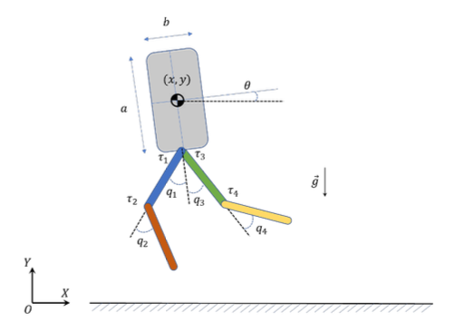
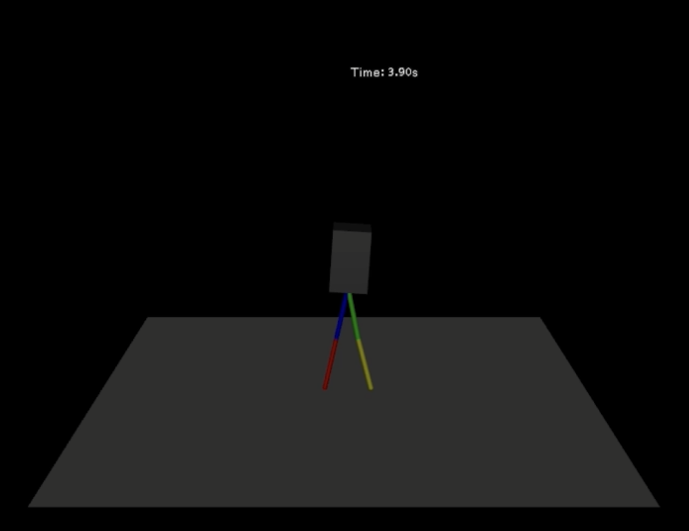
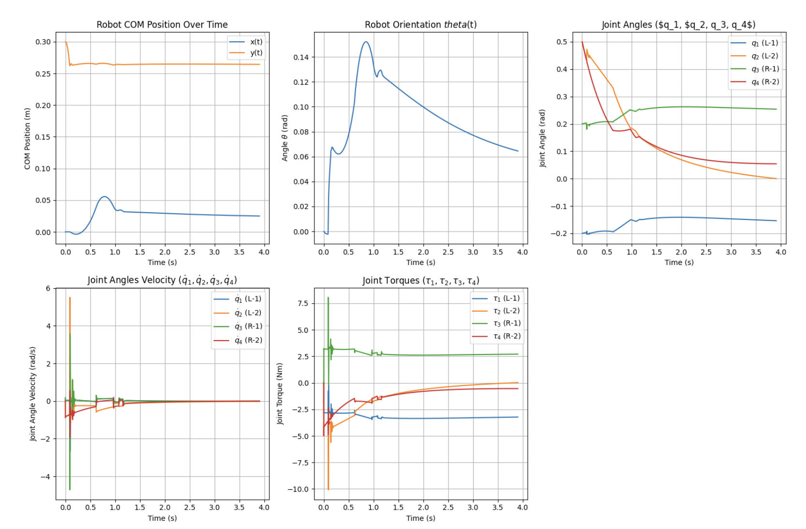
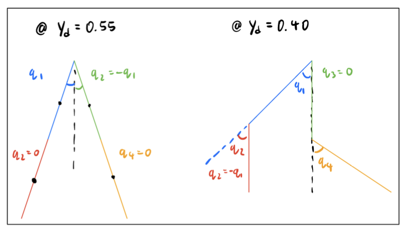
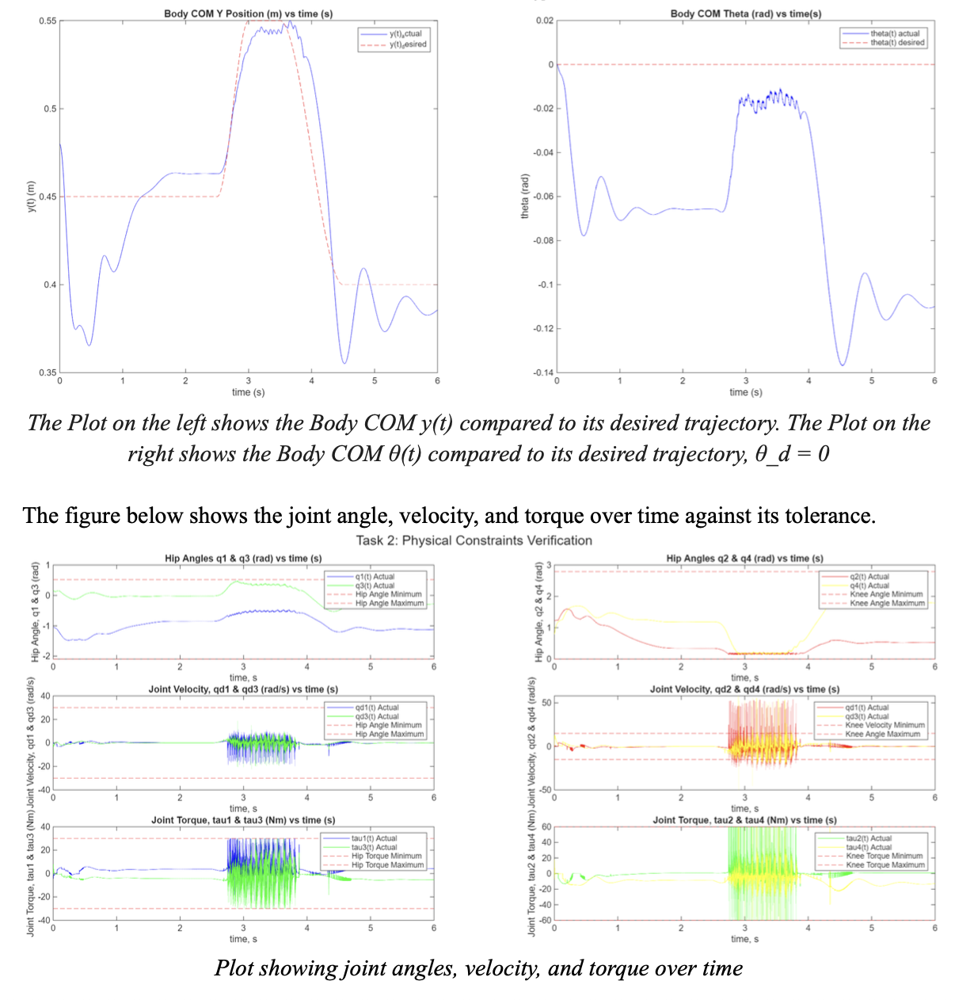
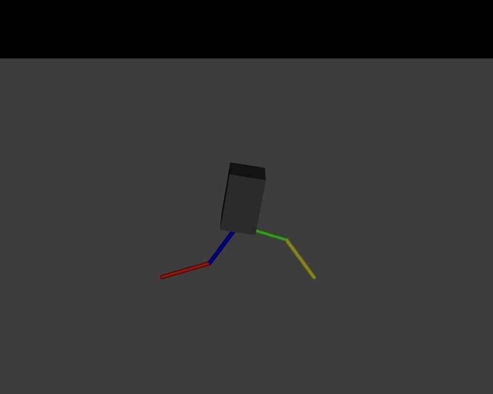
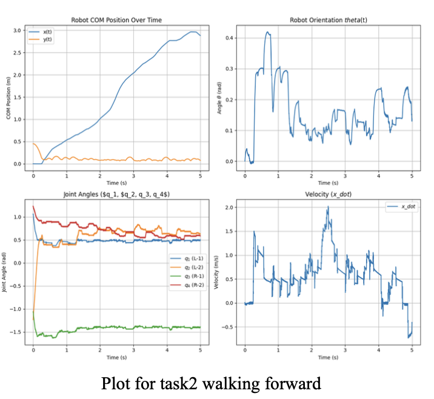
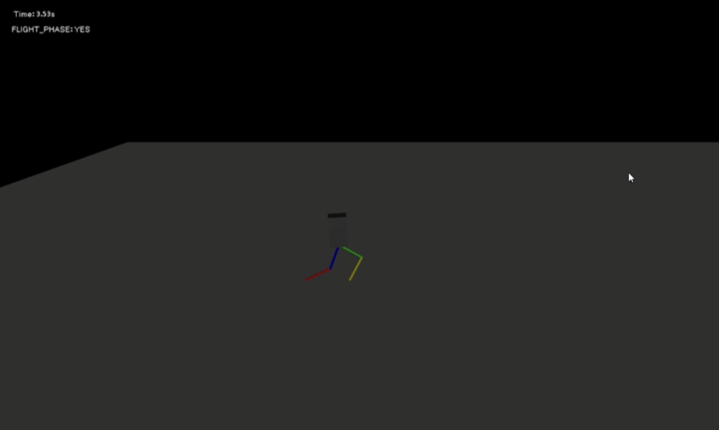
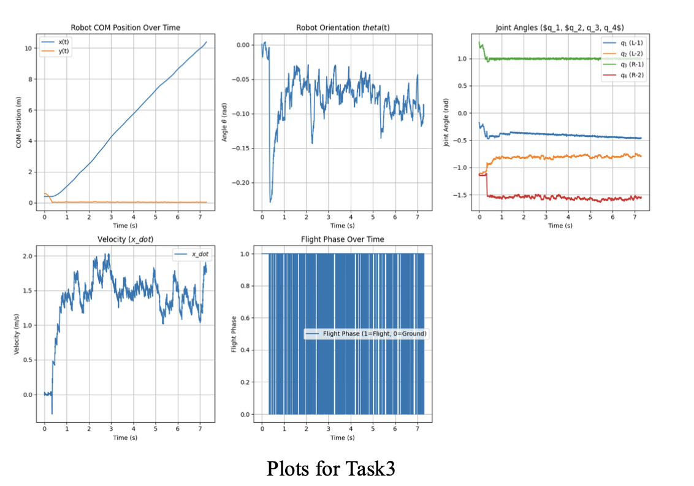
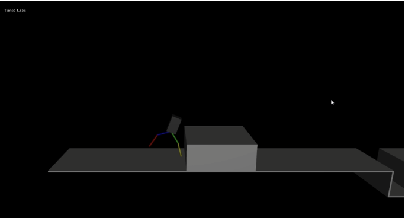

AME556 - Robot Dynamics and Control - Final Project

Task of the project was to design controllers for a 2D bipedal robot in MuJoCo and perform 5 tasks with a teammate
Task1 : Simulation and Physical Constraints


Result
The goal of this task was to check if the robot's joints (hip joints, knee joints) vioilate the given constraints in the simulation. My team used PD control to simulate the robot's physical movements, and plotted the results of the values over time.
Task2 : Standing and Walking




Result
The goal of this task was to perform bipedal robot's standing up and down simulation, and walking forwards and backwards with a certain velocity. For stability, mathematical calculations were required to obtain the appropriate joint angles. Also, since the robot had to walk with stability, maintaining body orientation was considered in the calculations.
As a result, my team designed a PD controller that allows the simulated robot to stand up and down, and walk with certain amount of speed. The magnitude of the speed could be tuned by adjusting the gains in the calculations.
Task3 : Running on flat ground


Result
The goal of this task was to simulate the bipedal robot to run certain amount of distance. Same as walking, stability of the robot was the priority task. My team designed a PD controller similar to walking, but with faster frequencies and phase for each link so that the robot can run.
As a result, the simulated robot was able to run 10 meters in 7.287 seconds.
Task4 : Stair Climbing

Result
The objective of this task was to simulate the bipedal robot to climb stairs with certain rise. Similar to the walking controller in the previous tasks, the new controller had to be added with joint lifting motion so that the simulated robot can climb the stairs. However, my team did not successfully complete the task. Due to not enough stability when the simulated robot lifts one leg, the robot was not able to put the second step onto the stair. This led to fall and collision with the stairs.
Task5 : Obstacle course

Result
The objective of this task was to simulate the bipedal robot to overcome the obstacle course. Similar to task4, my team could not even overcome the first obstacle, which was to climb the obstacle like stairs. Since we used similar walking controller, we failed to find the appropriate joint angles that could stabilize the robot when it is climbing an obstacle.
Project Documentation
For more detailed information, you can view the full project report: